Modules¶
core – The core of the simulator¶
The core of the simulator.
A world (instance of the World class) consists of bodies (instances of the Body class) interlinked by joints (instances of Joint subclasses). Joints serve two purposes in arboris:
- restrict the relative motion between bodies (for instance a hinge joint only allows for rotations around its axis)
- and parametrize the bodies positions (for instance a single angle is enough to parametrize the relative position of two bodies constrained by a hinge joint).
A world forms an oriented tree whose nodes are the bodies and edges are the joints, so that the state (pose and velocity) of each body can be computed from the state of its parent joints (the joints on the path from the body to the root of the tree (which is body called “ground”)).
One or more frames (instances of the SubFrame class) can be associated to bodies and serve as anchor points to the joints.
- class arboris.core.Body(name=None, mass=None, viscosity=None)¶
- body¶
- bpose¶
- djacobian¶
- iter_ancestor_bodies()¶
- iter_ancestor_joints()¶
- iter_descendant_bodies()¶
Iterate over all descendant bodies, with a depth-first strategy.
- iter_descendant_joints()¶
Iterate over all descendant joints, with a depth-first strategy.
- jacobian¶
- nleffects¶
- pose¶
- twist¶
- update_dynamic(pose, jac, djac, twist)¶
Compute the body pose, jac, djac, twist and its children ones.
This method (1) sets the body dynamical model (pose, jacobian, hessian and twist) to the values given as argument, (2) computes the dynamical model of the children bodies and (3) call the equivalent method on them.
As a result, the dynamical model of all the bodies is computed recursively.
Parameters: - pose (4x4 ndarray) – the body pose relative to the ground:

- jac (6x(ndof) ndarray) – the body jacobian relative to the world (in body frame):
![\J[b]_{b/g}](_images/math/27223ff7bed8ecdb8e92f99ef4467542c6ae9768.png)
- djac – the derivative of the body jacobian:
![\dJ[b]_{b/g}](_images/math/aadba67599a0d7cfbe2d036c8bb84c329b331077.png)
- twist (6 ndarray) – the body twist:
![\twist[b]_{b/g}](_images/math/fdfcc620ca0a43700f9987d6b4eda54d0f60b49f.png)
Algorithm:
Let’s define the following notations:
 : the ground body,
: the ground body, : the parent body (which is the present arboris.Body
instance)
: the parent body (which is the present arboris.Body
instance) : a child body,
: a child body, : the joint between the bodies and ,
: the joint between the bodies and , : reference frame of the joint , rigidly fixed to the parent
body
: reference frame of the joint , rigidly fixed to the parent
body : new frame of the joint , rigidly fixed to the child body
: new frame of the joint , rigidly fixed to the child body

One can notice that 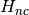 and
 are constant.
are constant.The child body pose can be computed as

where 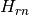 depends on the joint generalized configuration and is given by its pose attribute.
The chil body twist is given as
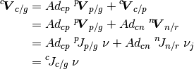
where
![\twist[n]_{n/r}](_images/math/06410c86a2edb076bb271a085dbd92c2fe611096.png) is given by the joint
twist attribute.
is given by the joint
twist attribute.
 is the generalized velocity of the joint and is
related to the world generalized velocity by trivial projection
is the generalized velocity of the joint and is
related to the world generalized velocity by trivial projection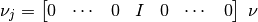
therefore, the child body jacobian is
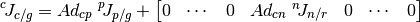
where 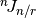 is given by the joint jacobian attribute. Derivating the previous expression leads to the child body acceleration:
![\dtwist[c]_{c/g} &= \dAd_{cp} \; \J[p]_{p/g} \; \GVel
+ \Ad_{cp} \; \dJ[p]_{p/g} \; \GVel
+ \Ad_{cp} \; \J[p]_g \; \dGVel
+ \Ad_{cn} \; \dJ[n]_{n/r} \; \GVel_j
+ \Ad_{cn} \; \J[n]_{m/r} \dGVel_j \\
&= \J[c]_{c/g} \; \dGVel + \dJ[c]_{c/g} \; \GVel](_images/math/1ab0623ea511cf877f81aa63e6a1e299d224c2c5.png)
the expression of the child body hessian is then obtained by identification:
![\dJ[c]_{c/g} \; \GVel
&= \dAd_{cp} \; \J[p]_{p/g} \; \GVel
+ \Ad_{cp} \; \dJ[p]_{p/g} \; \GVel
+ \Ad_{cn} \; \dJ[n]_{n/r} \; \GVel_j \\
\dJ[c]_{c/g}
&= \dAd_{cp} \; \J[p]_{p/g} + \Ad_{cp} \; \dJ[p]_{p/g} +
\begin{bmatrix}
0 & \cdots & 0 & (\Ad_{cn} \; \dJ[n]_{n/r}) & 0 & \cdots & 0
\end{bmatrix}](_images/math/1bf627bcff49da5651f8c0cf29d33a3c3c225009.png)
with

and where
 and
and ![\dJ[n]_{n/r}](_images/math/09477574fe0e49809561043f9f482cc7632dbef4.png) are respectively given by
the joint idadjoint and
djacobian attributes.
are respectively given by
the joint idadjoint and
djacobian attributes.T_ab: velocity of {a} relative to {b} expressed in {a} (body twist)
- pose (4x4 ndarray) – the body pose relative to the ground:
- update_geometric(pose)¶
Parameters: pose ((4,4)-array) – current pose of the body, relative to the ground - g: ground body
- p: parent body
- c: child body
- r: reference frame of the joint, rigidly fixed to the parent body
- n: new frame of the joint, rigidly fixed to the child body
so H_nc and H_pr are constant.
- class arboris.core.Constraint(name=None)¶
A generic class for kinematic constraint.
As a joint, it represents a kinematic restriction of the allowed relative twist of two frames. But here, this restriction is not directly taken into account in the model, but it is defined through a force. It generally represents kinematic closure that are not modeled by tree-structure system.
This class has virtual methods and properties. It should be subclassed by concrete implementations.
- disable()¶
- enable()¶
- gforce¶
- init(world)¶
- is_active()¶
- is_enabled()¶
- jacobian¶
- ndol¶
Number of degrees of linkage.
In french: nombre de degrés de liaison. This is equal to (6 - ndof).
- solve(vel, admittance, dt)¶
- update(dt)¶
- exception arboris.core.DuplicateNameError(message)¶
- class arboris.core.Frame¶
A generic class for frames.
- body¶
- bpose¶
- djacobian¶
- jacobian¶
- pose¶
- twist¶
- class arboris.core.Joint(name=None)¶
A generic class for ideal joints.
An ideal joint is a kinematic restriction of the allowed relative twist of two frames, here named frames 0 and 1, to which the joint is said to be attached. In arboris, it serves to parametrize the relative position and velocity of frame 1 regarding to frame 0.
This class has virtual methods and properties. It should be subclassed by concrete implementations.
- djacobian¶
- dof¶
joint dofs index mapping in the world gvel vector.
Return type: a slice (start_index, end_index, 1) Raise: ValueError if World initialize method init() has not been called
- frame0¶
- frame1¶
- frames¶
Frames to which the joint is attached.
- integrate(gvel, dt)¶
- jacobian¶
Jacobian of the joint relative position.
Return the matrix
 such that .
Or, with numpy notation, j.twist == dot(j.jacobian, j.gvel).
such that .
Or, with numpy notation, j.twist == dot(j.jacobian, j.gvel).This matrix generally changes with the joint generalized position.
- ndof¶
Number of degrees of freedom of the joint.
- set_frames(frame0, frame1)¶
- twist¶
Relative twist
![\twist[1]_{1/0}](_images/math/28bc344cbd086174e29226298b680e75b7f94dbe.png) .
.It is the twist of frame 1 regarding to frame 0 expressed in frame 1.
- class arboris.core.LinearConfigurationSpaceJoint(gpos=None, gvel=None, name=None)¶
Joints whose configuration space is diffeomorph to .
- integrate(gvel, dt)¶
- class arboris.core.MovingSubFrame(body, bpose=None, name=None)¶
Create a frame rigidly fixed to a body.
Parameters: - body (class:) – parent body which will support this subframe
- bpose ((4,4)-array) – the homogeneous matrix from the parent body to the subframe
- name (string) – the name of the subframe
Example:
>>> b = Body() >>> f = SubFrame(b, Hg.rotz(3.14/3.),'Brand New Frame')
The body argument must be a member of the Body class: >>> f = SubFrame(None, Hg.rotz(3.14/3.)) Traceback (most recent call last): ... ValueError: The body argument must be an instance of the Boby class
The bpose argument must be an homogeneous matrix: >>> b = Body() >>> from numpy import ones >>> f = SubFrame(b, ones((4,4))) Traceback (most recent call last): ... AssertionError
- bpose¶
- class arboris.core.NamedObject(name=None)¶
A class for anything named to depend from.
- class arboris.core.NamedObjectsList(iterable=None)¶
A list of (possibly) NamedObjects.
This class behaves like the built-in list class except that objects can be retrieved by name, using a string index or the find method. In the first case, the first matching object is returned, in the second case a (raw) list of matching objects is returned.
Example:
>>> L = [Body(name="Jean-Paul"), 1., 'sss'] >>> NL = NamedObjectsList(L) >>> NL.append(Body(name=u'Guard')) >>> NL.append(Body(name=u'Jean-Paul')) >>> NL['Guard'] <arboris.core.Body object named "Guard" at "0x...")> >>> NL['Jean-Paul'] <arboris.core.Body object named "Jean-Paul" at "0x...")> >>> NL.find('Jean-Paul') [<arboris.core.Body object named "Jean-Paul" at "0x...")>, <arboris.core.Body object named "Jean-Paul" at "0x...")>] >>> NL['Jean-Marie'] Traceback (most recent call last): ... KeyError: 'No object named "Jean-Marie".' >>> NL['Jean-Paul'] = 3 Traceback (most recent call last): ... TypeError: list indices must be integers, not str
- as_dict()¶
Convert named-list as dict {‘name’: object}.
Returns a dictionary whose keys are the objects names and values are the objects themselves. Objects with no name are ignored. Duplicate names raise a DuplicateName exception.
- find(name)¶
- class arboris.core.Shape(frame, name=None)¶
A generic class for geometric shapes used in collision detection.
- class arboris.core.SubFrame(body, bpose=None, name=None)¶
Create a frame rigidly fixed to a body.
Parameters: - body (class:) – parent body which will support this subframe
- bpose ((4,4)-array) – the homogeneous matrix from the parent body to the subframe
- name (string) – the name of the subframe
Example:
>>> b = Body() >>> f = SubFrame(b, Hg.rotz(3.14/3.),'Brand New Frame')
The body argument must be a member of the Body class: >>> f = SubFrame(None, Hg.rotz(3.14/3.)) Traceback (most recent call last): ... ValueError: The body argument must be an instance of the Boby class
The bpose argument must be an homogeneous matrix: >>> b = Body() >>> from numpy import ones >>> f = SubFrame(b, ones((4,4))) Traceback (most recent call last): ... AssertionError
- bpose¶
- class arboris.core.World(name=None)¶
- add_link(frame0, joint, frame1, *args)¶
Add a link (ie. Joint and Body) to the world.
Parameters: - frame0 (class:) – the frame where the new joint will be attached. It should belong to a body which is already in the world.
- joint (class:) – the joint to be added.
- frame1 (class:) – the frame of the body which is to be added to the world.
One can also add several links at a time:
world.add_link(frame0_a,joint_a,frame1_a,frame0_b,joint_b,frame1_b)
- admittance¶
- current_time¶
- getbodies()¶
Returns a NamedObjectsList of the world bodies.
- getconstraints()¶
Returns a NamedObjectsList of the world constraints.
- getcontrollers()¶
Returns a NamedObjectsList of the world controllers.
- getframes()¶
Returns a NamedObjectsList of the world frames.
- getjoints()¶
Returns a JointsList of the joints.
Example:
>>> w = simplearm() >>> joints = w.getjoints() >>> joints[1] <arboris.joints.RzJoint object named "Elbow" at "0x...")> >>> joints['Elbow'] <arboris.joints.RzJoint object named "Elbow" at "0x...")> >>> joints.dof slice(0, 3, None)
- getshapes()¶
Returns a NamedObjectsList of the world shapes.
- gforce¶
- gvel¶
- init()¶
Init the joints-space model of the world.
- integrate(dt)¶
Parameters: dt (float) – integration time From the update_controllers() and update_constraints() methods we get the new generalized velocity.
In order to get the new generalized position, each joint is integrated separately.
TODO: add support for kinematic controllers TODO: repair this doctest TODO: check the last test result!
>>> w = simplearm() >>> joints = w.getjoints() >>> joints['Shoulder'].gpos[:] = -1. >>> from arboris.controllers import ProportionalDerivativeController >>> c0 = ProportionalDerivativeController(w.joints[1:2], 1.) >>> w.register(c0) >>> w.init() >>> w.update_dynamic() >>> dt = 0.001 >>> w.update_controllers(dt) >>> w.integrate(dt) >>> w._gvel array([-0.00709132, 0.03355273, -0.09131555])
- iterbodies()¶
Iterate over all bodies, with a depth-first strategy.
- iterconstraints()¶
Iterate over all constraints.
- iterframes()¶
Iterate over all frames (bodies and subframes).
- iterjoints()¶
Iterate over all joints, with a depth-first strategy.
- itermovingsubframes()¶
Iterate over all subframes.
- itershapes()¶
Iterate over all shapes.
- itersubframes()¶
Iterate over all subframes.
- mass¶
- name_all_elements(check_unicity=False)¶
- ndof¶
- nleffects¶
- parse(target)¶
Parse the world and call hooks on the target object.
This helper function walks the world with a depth-first strategy and call the register and add_link methods of the target object. Each world element will be register only once. The order of the successive registration is meant to ease conversion to hierachic data structures such as collada or OSG ones.
TODO: add an example, such as the parse of the pantograph.
- register(obj)¶
Register an object into the world.
obj can be a subframe, a shape or a constraint.
Arguments: - obj
the object that will be added. It may be a subframe, a shape, a joint, a body or a controller.
Example:
>>> w = simplearm() >>> from arboris.controllers import ProportionalDerivativeController >>> joints = w.getjoints() >>> c0 = ProportionalDerivativeController(joints[1:3], ... name = 'my controller') >>> w.register(c0) >>> c1 = ProportionalDerivativeController(joints[0:1]) >>> w.register(c1) >>> w.init()
- replace_joint(old_joint, *args)¶
Replace a joint by another joint or by another kinematic chain.
Syntax:
world.replace_joint(old_joint, new_joint) world.replace_joint(old_joint, frame0, new_joint, ... , frame1)
Example:
>>> w = simplearm() >>> from arboris.joints import RzJoint >>> joints = w.getjoints() >>> w.replace_joint(joints['Elbow'], RzJoint())
- up¶
- update_constraints(dt, maxiters=1000, tol=0.0001)¶
Parameters: - dt (float) – integration time
- maxiters (int) – maximum number of iteration to find the proper constraint forces
- tol (float) – convergence tolerance, corresponding to the norm(gvel_i - gvel_i-1)
In accordance with the integration scheme, we assume the following first order model between generalized velocities and generalized forces:
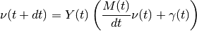
where:
- the admittance matrix
 takes into account a
first order model of the actuators,
takes into account a
first order model of the actuators, - the actuators generalized forces
 are assumed to be constant during the
are assumed to be constant during the ![[t , t+dt ]](_images/math/dca874af37778dd884dda65a85f308933605926a.png) time interval.
time interval.
This (constraint-free) model must be completed by constraints forces
![\force[c]](_images/math/12ba30c6ad0be9aea1e7a70ece4fad5db107b212.png) , which are mapped to generalized forces
by the constraint jacobian
, which are mapped to generalized forces
by the constraint jacobian ![\J[c]_c\tp](_images/math/f6cf289461b57d580c6fe402889d44bdffe42ddd.png) :
:![\GVel(t+dt)
&= Y(t)
\left( \frac{M(t)}{dt} \GVel(t) + \GForce(t)
+ \sum_{c} \; \J[c]_{c}\tp(t) \; \force[c](t)
\right)](_images/math/205b12c5dd6dad3727ead45bdcece0f94ecb22b1.png)
one can also define the constraint velocity as:
![\vel[c] = \J[c]_c \; \GVel](_images/math/10fe0aaf393dcf19a0b652381a1e21fcc63b1a40.png) so that:
so that: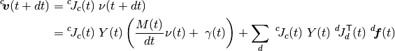
one can define the (global) constraints velocity
 ,
force
,
force  , jacobian matrix
, jacobian matrix  and admittance matrix 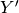:
and admittance matrix 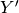:\\ \vdots \\ \vel[c](t) \\ \vdots
\end{bmatrix}
\hspace{50px}
f'(t) =
\begin{bmatrix}
\force[0](t)\\ \vdots \\ \force[c](t) \\ \vdots
\end{bmatrix}
\hspace{50px}
J'(t) =
\begin{bmatrix}
\J[0]_0(t)\\
\vdots\\
\J[c]_c(t)\\
\vdots
\end{bmatrix}
\hspace{50px}
Y'(t) =
J'(t) \; Y(t) \; J'(t)\tp](_images/math/cd0c47b73384b905936935aaf4609f0bdeca2fd4.png)
and get a synthetic expression:

This method computes the constraint forces in three steps:
- ask each active constraint object for its jacobian,
- compute
 ,
,  and ,
and , - iterate over each constraint object in order to compute
. At each iteration the force is
updated by
![\Delta\force[c]](_images/math/efcc6524ca0c22ffd1082771a0b309252364f22f.png)
- eventually add each active constraint generalized force to world _gforce property.
TODO: add an example.
- update_controllers(dt)¶
Parameters: dt (float) – integration time Example:
>>> w = simplearm() >>> from arboris.controllers import ProportionalDerivativeController >>> joints = w.getjoints() >>> a0 = ProportionalDerivativeController(joints[1:2], 2.) >>> w.register(a0) >>> w.init() >>> w.update_dynamic() >>> w.update_controllers(0.001) >>> w._impedance array([[ 686.98833333, 223.44666667, 20.67333333], [ 223.44666667, 93.44866667, 10.67333333], [ 20.67333333, 10.67333333, 2.67333333]]) >>> w._admittance array([[ 0.00732382, -0.0203006 , 0.0244142 ], [-0.0203006 , 0.07594182, -0.14621124], [ 0.0244142 , -0.14621124, 0.76901683]])
Algorithm:
Let’s consider the following discretized 2nd-order model:

considering

we get
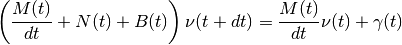
Here
sums up the generalized forces due to
all the active controllers and constraints.The generalized force due to a controller has the following form:

where 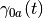 is constant during the 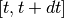 period of time.
It leads us to
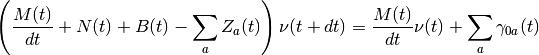
One can the define impedance (
 ) and admittance ()
matrices:
) and admittance ()
matrices:
TODO: check the two last tests results!
- update_dynamic()¶
Compute the forward geometric, kinematic and dynamic models.
Recursively update each body pose, jacobian, djacobian, twist and nleffects attributes (thanks to the arboris.core.Body.update_dynamic() method) and then update the world mass, viscosity and nleffects attributes.
Example:
>>> w = simplearm() >>> w.update_dynamic()
Algorithm:
The (world) generalized mass, viscosity and nleffect matrices respectively denoted 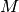,
 and
and  are computed from each body
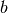 jacobian , hessian , mass
are computed from each body
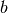 jacobian , hessian , mass  ,
viscosity 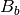 and nleffects 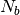 matrices as :
,
viscosity 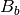 and nleffects 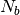 matrices as :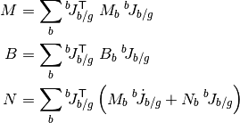
If there is no additional constraint (such as contacts) nor actuation involved, the resulting (free) model is then:
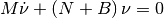
- update_geometric()¶
Compute the forward geometric model.
This will recursively update each body pose attribute.
Example:
>>> w = simplearm() >>> w.update_geometric()
- viscosity¶
- arboris.core.name_all_elements(nlist, check_unicity=False)¶
- arboris.core.simplearm()¶
joints - Concrete joint implementations¶
Different kinds of joints
- class arboris.joints.FixedJoint(name=None)¶
Fixed joint (0-dof).
A fixed joint where all dof are constrained.
Parameters: name (string) – the joint name Example:
>>> j = FreeJoint() >>> print j.gpos []
- djacobian¶
- integrate(gvel, dt)¶
- jacobian¶
- ndof¶
- pose¶
- twist¶
- class arboris.joints.FreeJoint(gpos=None, gvel=None, name=None)¶
Free joint (6-dof).
A free joint, with no dof constrained.
Parameters: - gpos ((4,4)-array) – initial generalized joint position, a homogeneous matrix
- gvel ((6,)-array) – initial generalized joint velocity, a twist
- name (string) – the joint name
Example:
>>> j = FreeJoint() >>> j.gpos array([[ 1., 0., 0., 0.], [ 0., 1., 0., 0.], [ 0., 0., 1., 0.], [ 0., 0., 0., 1.]]) >>> j.gvel array([ 0., 0., 0., 0., 0., 0.])
- djacobian¶
- integrate(gvel, dt)¶
- jacobian¶
- ndof¶
- pose¶
- twist¶
- class arboris.joints.RxJoint(gpos=None, gvel=None, name=None)¶
Hinge (1-dof) with axis in the x-direction.
- djacobian¶
- ipose¶
- jacobian¶
- ndof¶
- pose¶
- class arboris.joints.RyJoint(gpos=None, gvel=None, name=None)¶
Hinge (1-dof) with axis in the y-direction.
- djacobian¶
- ipose¶
- jacobian¶
- ndof¶
- pose¶
- class arboris.joints.RyRxJoint(gpos=None, gvel=None, name=None)¶
Fingered Ball (2-dof) implemented with 2 serial hinges.
The resulting homogeneous matrix is given by .
- djacobian¶
- jacobian¶
- ndof¶
- pose¶
- class arboris.joints.RzJoint(gpos=None, gvel=None, name=None)¶
Hinge (1-dof) with axis in the z-direction.
Example:
>>> j = RzJoint(gpos = 3.14/2., gvel = 1.) >>> j.gpos array([ 1.57]) >>> j.gvel array([ 1.])
- djacobian¶
>>> j = RzJoint(gpos = 3.14/2., gvel = 1.) >>> j.djacobian array([[ 0.], [ 0.], [ 0.], [ 0.], [ 0.], [ 0.]])
- ipose¶
>>> j = RzJoint(gpos = 3.14/2., gvel = 1.) >>> j.ipose array([[ 7.96326711e-04, 9.99999683e-01, 0.00000000e+00, 0.00000000e+00], [ -9.99999683e-01, 7.96326711e-04, 0.00000000e+00, 0.00000000e+00], [ 0.00000000e+00, 0.00000000e+00, 1.00000000e+00, 0.00000000e+00], [ 0.00000000e+00, 0.00000000e+00, 0.00000000e+00, 1.00000000e+00]])
- jacobian¶
>>> j = RzJoint(gpos = 3.14/2., gvel = 1.) >>> j.jacobian array([[ 0.], [ 0.], [ 1.], [ 0.], [ 0.], [ 0.]])
- ndof¶
- pose¶
>>> j = RzJoint(gpos = 3.14/2., gvel = 1.) >>> j.pose array([[ 7.96326711e-04, -9.99999683e-01, 0.00000000e+00, 0.00000000e+00], [ 9.99999683e-01, 7.96326711e-04, 0.00000000e+00, 0.00000000e+00], [ 0.00000000e+00, 0.00000000e+00, 1.00000000e+00, 0.00000000e+00], [ 0.00000000e+00, 0.00000000e+00, 0.00000000e+00, 1.00000000e+00]])
- class arboris.joints.RzRxJoint(gpos=None, gvel=None, name=None)¶
Fingered Ball (2-dof) implemented with 2 serial hinges.
The resulting homogeneous matrix is given by .
- djacobian¶
- jacobian¶
- ndof¶
- pose¶
- class arboris.joints.RzRyJoint(gpos=None, gvel=None, name=None)¶
Fingered Ball (2-dof) implemented with 2 serial hinges.
The resulting homogeneous matrix is given by .
- djacobian¶
- jacobian¶
T_n/r =
- ndof¶
- pose¶
- class arboris.joints.RzRyRxJoint(gpos=None, gvel=None, name=None)¶
Ball and socket (3-dof) joint implemented with 3 serial hinges.
The resulting homogeneous matrix is given by
 .
.- djacobian¶
- jacobian¶
T_n/r =
- ndof¶
- pose¶
- class arboris.joints.TxJoint(gpos=None, gvel=None, name=None)¶
Prismatic (1-dof) with axis in the x-direction.
- djacobian¶
- ipose¶
- jacobian¶
- ndof¶
- pose¶
- class arboris.joints.TxTyTzJoint(gpos=None, gvel=None, name=None)¶
Triple prismatic joint (3-dof).
The resulting homogeneous matrix is given by 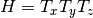.
- djacobian¶
- jacobian¶
- ndof¶
- pose¶
observers - Get world information¶
A set of Observers.
- class arboris.observers.CoMObserver(bodies, compute_Jacobians=True, name=None)¶
Get Center of Mass (CoM) position and jacobian of a group of bodies.
This observer can also be used in another observer to record CoM data, or in a controller to control the CoM motion.
Parameters: - bodies (list of Body) – the bodies on which the CoM is computed
- compute_Jacobians (bool) – whether CoM jacobian and its derivative has to be computed
- name (string) – the instance name of the observer
- finish()¶
- get_CoMJacobian()¶
- get_CoMPosition()¶
- get_CoMdJacobian()¶
- init(world, timeline=None)¶
- update(dt)¶
- class arboris.observers.EnergyMonitor(name=None)¶
Compute and store the world energy at each time step.
Example:
>>> from arboris.core import World, simulate >>> from arboris.robots.simplearm import add_simplearm >>> w = World() >>> observers = [EnergyMonitor()] >>> add_simplearm(w) >>> simulate(w, [0,1,2], observers) >>> #obs.plot()
Parameters: name (string) – the instance name of the observer - finish()¶
- init(world, timeline)¶
- plot()¶
Plot the energy evolution.
- update(dt)¶
- class arboris.observers.Hdf5Logger(filename, group='/', mode='a', save_transforms=True, save_state=False, save_model=False, flat=False, name=None)¶
A concrete class to save simulation data in hdf5 file.
See SaveLogger to have more info on saved data.
All the simulation data lies in a single user-chosen group, that is denoted root in the following, and which defaults to /.
The hdf5 file has the following layout:
root/timeline (nsteps,) root/gpositions/ root/gvelocities/ root/model/ root/transforms/
Here, gpositions, gvelocities, model, transforms represent hdf5 groups.
Parameters: - filename (string) – the name of the hdf5 file where to write the data
- group (string) – the group name inside the hdf5 file where to write data
- mode (string) – mode to open the hdf5 file
- save_transforms (bool) – toggle the write of the transforms group
- save_state (bool) – toggle the write of the gpos and gvel groups
- save_model (bool) – toggle the write of model group
- flat (bool) – whether to save body of joint poses in the transforms group
- name (string) – the instance name of the observer
- finish()¶
- class arboris.observers.PerfMonitor(log=False, name=None)¶
Get current world time during simulation, and overall simulation performances.
Example:
>>> from arboris.core import World, simulate >>> from arboris.robots.simplearm import add_simplearm >>> w = World() >>> obs = PerfMonitor() >>> add_simplearm(w) >>> simulate(w, [0,1,2], [obs]) >>> print obs.get_summary() total computation time (s): ... min computation time (s): ... mean computation time (s): ... max computation time (s): ... >>> #obs.plot()
Parameters: - log (bool) – whether to show current time of simulation
- name (string) – the instance name of the observer
- finish()¶
- get_summary()¶
- init(world, timeline)¶
- plot()¶
- update(dt)¶
- class arboris.observers.PickleLogger(filename, mode='wb', save_transforms=True, save_state=False, save_model=False, flat=False, protocol=0, name=None)¶
A concrete class to save simulation data in pickle file.
See SaveLogger to have more info on saved data.
Here, gpositions, gvelocities, model, transforms are saved as dictionnaries in pickle file.
Parameters: - filename (string) – the name of the pickle file where to write the data
- mode (string) – mode to open the pickle file
- save_transforms (bool) – toggle the write of the transforms group
- save_state (bool) – toggle the write of the gpos and gvel groups
- save_model (bool) – toggle the write of model group
- flat (bool) – whether to save body of joint poses in the transforms group
- name (string) – the instance name of the observer
- finish()¶
- class arboris.observers.RecordCoMPosition(bodies, name=None)¶
Record the CoM position of a group of bodies.
Parameters: - bodies (list of Body) – the bodies on which the CoM is computed
- name (string) – the instance name of the observer
- init(world, timeline)¶
- update(dt)¶
- class arboris.observers.RecordConstForce(const, name=None)¶
Record the generalized force of a constraint.
Parameters: - joint (Constraint) – the constraint to track
- name (string) – the instance name of the observer
- update(dt)¶
- class arboris.observers.RecordDistance(sh1, sh2, name=None)¶
Record the distance between two shapes.
Parameters: Warning:
This recorder works only if a distance solver for these two shapes is returned by choose_solver().
- update(dt)¶
- class arboris.observers.RecordFramePose(frame, name=None)¶
Record the pose of a frame (
 ) relative to the ground ()
) relative to the ground ()  .
.Parameters: - joint (Frame) – the frame to track
- name (string) – the instance name of the observer
- update(dt)¶
- class arboris.observers.RecordFrameTwist(frame, name=None)¶
Record the twist of a frame (
) relative to the ground () expressed in frame .Parameters: - joint (Frame) – the frame to track
- name (string) – the instance name of the observer
- update(dt)¶
- class arboris.observers.RecordJointGpos(joint, name=None)¶
Record the generalized pose of a joint.
Parameters: - joint (Joint) – the joint to track
- name (string) – the instance name of the observer
- update(dt)¶
- class arboris.observers.RecordJointGvel(joint, name=None)¶
Record the generalized velocity of a joint.
Parameters: - joint (Joint) – the joint to track
- name (string) – the instance name of the observer
- update(dt)¶
- class arboris.observers.SaveLogger(save_transforms=True, save_state=False, save_model=False, flat=False, name=None)¶
An abstract observer that saves the simulation data.
All the data are in S.I. units (radians, meters, newtons and seconds).
The possible recorded data for each time step are:
timeline (nsteps,) gpositions/ gvelocities/ model/ transforms/
The gvelocities contains the generalized velocities of the joints:
NameOfJoint0 (nsteps, joint0.ndof) NameOfJoint1 (nsteps, joint1.ndof) ...
while the gpositions contains their generalized positions.
The model contains the matrices from the dynamical model:
gvel (nsteps, ndof) gforce (nsteps, ndof) mass (nsteps, ndof, ndof) nleffects (nsteps, ndof, ndof) admittance (nsteps, ndof, ndof)
The transforms contains homogeneous transformations, useful for viewing an animation of the simulation:
NameOfTransform0 (nsteps, 4, 4) NameOfTransform1 (nsteps, 4, 4) ...
The name and value of the transforms depends on the flat parameter. If flat is True, then there is one transform per body, named after the body and whose value is the body absolute pose (Body.pose). If flat is False, there is one transform per joint, whose value is Joint.pose and whose name is taken from the joint second frame (Joint.frames[1].name).
Parameters: - save_transforms (bool) – toggle the write of the transforms group
- save_state (bool) – toggle the write of the gpos and gvel groups
- save_model (bool) – toggle the write of model group
- flat (bool) – whether to save body of joint poses in the transforms group
- name (string) – the instance name of the observer
- init(world, timeline)¶
- update(dt)¶
Save the current data (state...).
- class arboris.observers.SocketCom(host='127.0.0.1', port=5000, timeout=3, name=None)¶
An abstract observer that can communicate with another application through sockets.
Children class must defined the update method.
Parameters: - host (string) – the remote host address
- port (int) – the remote connection port
- timeout (float) – time before raising error if not connection found
- name (string) – the instance name of the observer
- finish()¶
- init(world, timeline)¶
shapes - For collision & display¶
Geometric shapes, for use in collision detection.
- class arboris.shapes.Box(frame, half_extents=(1.0, 1.0, 1.0), name=None)¶
A box.
Parameters: - frame (Frame) – the frame the shape is attached to
- half_extents ((3,)-array) – the half dimension of the box along x, y, z
- name (string) – the shape’s name
- class arboris.shapes.Cylinder(frame, length=1.0, radius=1.0, name=None)¶
A cylinder, whose symmetry axis is along the z-axis.
Parameters: - frame (Frame) – the frame the shape is attached to
- length (float) – the cylinder length along z-axis
- name (string) – the shape’s name
- class arboris.shapes.Plane(frame, coeffs=(0.0, 1.0, 0.0, 0.0), name=None)¶
A plane.
A plane defined by the equation , in the frame coordinates.
Parameters: - frame (Frame) – the frame the shape is attached to
- coeffs ((4,)-array) – coefficients for the plane equation
- name (string) – the shape’s name
human36¶
This module serve as a factory for anthropometric humanoid models.
The model is based on the human36 anatomical model from the HuMAnS toolbox software, developed at the INRIA in Grenoble.
To the end-user, only the add_human36() function should be useful.
Finding the anatomical parameters in the HuMAnS toolbox source code
HuMAnS (at version 1.0.7) uses Maple-generated C-code for computing the lagrangian model matrices and performs the integration and contact resolution in scilab. More precisely, some maple code in the HuMAnS/LagrangianModel/Model/Human36/MapleCodeGeneration directory describes
- the lagrangian dynamics,
- the contact kinematics,
- and the “tags” kinematics (in the HuMAnS vocable, Tags are feature points such as the anatomical landmarks used for human motion reconstruction, as defined as “Sites” in H-anim).
These files generate the C files that are then called from scilab. The functions take as parameters the human state (generalized positions and velocities) and anatomical parameters which are divided in
- parameters needed for kinematic model (the L variable in HuMAnS/LagrangianModel/Human36/MapleCodeGeneration/kinematicData.maple),
- parmeters needed for motion reconstruction and contacts (the AddL variable in HuMAnS/LagrangianModel/Human36/MapleCodeGeneration/AdditionnalData.maple).
The two arrays of parameters are computed from the human’s total height in the function SetModelSize from the file HuMAnS/LagrangianModel/Human36/human36.c.
The data about mass geomerty are located in HuMAnS/LagrangianModel/Model/Human36/MapleCodeGeneration/DynamicData.maple.
Warning: the HuMAnS doc about inertia computation was erroneous (the real math is in the IOMatrix proc in DynamicData.maple).
Human Motion Analysis and Simulation toolbox
- arboris.robots.human36.add_human36(world, height=1.741, mass=73, anat_lengths=None, prefix='')¶
Add an anthropometric humanoid model to the world.
Parameters: - height (float) – the human height in meters. Ignored if anat_lengths is provided.
- mass (float) – the human mass in kilograms.
- anat_lengths (dict) – the human anatomical lengths. Computed from height if not provided
- prefix (string) – name of the human, used to prefix every object name.
- return_lists – if True, returns of a tuple of the added objects
Returns: None
Examples
>>> w = World() >>> # add a normal human >>> add_human36(w, height=1.8, prefix="Bob's ") >>> # add a human with a shorter left arm >>> L = anat_lengths_from_height(1.8) >>> L['yhumerusL'] *= .7 >>> L['yforearmL'] *= .7 >>> L['yhandL'] *= .7 >>> add_human36(w, anat_lengths=L, prefix="Casimodo's ") >>> frames = w.getframes() >>> >>> frames["Bob's Left stylion"].bpose[0:3, 3] >>> frames["Bob's Left stylion"].pose[0:3, 3] >>> frames["Casimodo's Left stylion"].bpose[0:3, 3]
- arboris.robots.human36.anat_lengths_from_height(height)¶
Dict-like object storing anatomical lengths as defined in HuMAnS.
Parameters: height (float) – the human height Returns: anatomical lengths, scaled according to height Return type: dict Examples:
>>> L = anat_lengths_from_height(1.741) >>> L['ysternoclavL'] 0.17061800000000002 >>> L = anat_lengths_from_height(2.) >>> print(L['ysternoclavL']) 0.196
Differences with HuMAnS:
The data comes from the file LagrangianModel/Human36/Human36.c in HuMAnS. The lengths defined in this class correspond to the L variable in HuMAnS/LagrangianModel/Human36/MapleCodeGeneration/kinematicData.maple, with the addition of xheelR and xheelL lenghts are not defined in anatomicalLengths but in tagMultSize
Differences with matlab-arboris:
In this implementation, the “zshoulder”, “zhip” and “xfoot” lengths are computed as in HuMAnS, which is different from the way they were computed in matlab-arboris.
- arboris.robots.human36.height_from_anat_lengths(lengths)¶
Computes a human height according to its anatomical lengths.
An exception is thrown if the human is asymmetric (one leg longer than the other...).
Return height: the human height Return type: float Raises: ValueError if one leg is longer than the other Examples:
>>> L = anat_lengths_from_height(1.741) >>> print(height_from_anat_lengths(L)) 1.741 >>> L['ytibiaL'] = .95 * L['ytibiaL'] # shorten the left leg >>> height_from_anat_lengths(L) Traceback (most recent call last): ... ValueError: The legs have different lengths
homogeneousmatrix¶
Functions for working with homogeneous matrices.
- arboris.homogeneousmatrix.adjoint(H)¶
Adjoint of the homogeneous matrix.
Parameters: H ((4,4)-array) – homogeneous matrix Returns: adjoint matrix Return type: (6,6)-array Example:
>>> H = array( ... [[ 0.70738827, 0. , -0.70682518, 3. ], ... [ 0.61194086, 0.50045969, 0.61242835, 4. ], ... [ 0.35373751, -0.86575984, 0.35401931, 5. ], ... [ 0. , 0. , 0. , 1. ]]) >>> adjoint(H) array([[ 0.70738827, 0. , -0.70682518, 0. , 0. , 0. ], [ 0.61194086, 0.50045969, 0.61242835, 0. , 0. , 0. ], [ 0.35373751, -0.86575984, 0.35401931, 0. , 0. , 0. ], [-1.64475426, -5.96533781, -1.64606451, 0.70738827, 0. , -0.70682518], [ 2.47572882, 2.59727952, -4.59618383, 0.61194086, 0.50045969, 0.61242835], [-0.9937305 , 1.50137907, 4.66458577, 0.35373751, -0.86575984, 0.35401931]])
- arboris.homogeneousmatrix.dAdjoint(Ad, T)¶
Return the derivative of an Adjoint with respect to time.
Parameters: - Ad ((6,6)-array) – the Adjoint matrix one wants the derivative.
- T ((6,)-array) – the corresponding twist
Returns: the derivative of the adjoint matrix
Return type: (6,6)-array
Definition from arboris-matlab:
if H is defined as follow:
- arboris.homogeneousmatrix.iadjoint(H)¶
Return the adjoint ((6,6) array) of the inverse homogeneous matrix.
- arboris.homogeneousmatrix.inv(H)¶
Invert a homogeneous matrix.
Parameters: H ((4,4)-array) – the homogeneous matrix to invert Returns: inverted homogeneous matrix Return type: (4,4)-array Example:
>>> H = array( ... [[ 0.70738827, 0. , -0.70682518, 3. ], ... [ 0.61194086, 0.50045969, 0.61242835, 4. ], ... [ 0.35373751, -0.86575984, 0.35401931, 5. ], ... [ 0. , 0. , 0. , 1. ]]) >>> inv(H) array([[ 0.70738827, 0.61194086, 0.35373751, -6.3386158 ], [ 0. , 0.50045969, -0.86575984, 2.32696044], [-0.70682518, 0.61242835, 0.35401931, -2.09933441], [ 0. , 0. , 0. , 1. ]])
- arboris.homogeneousmatrix.ishomogeneousmatrix(H, _tol=1e-09)¶
Return true if input is an homogeneous matrix.
Parameters: - H ((4,4)-array) – the homogeneous matrix to check
- _tol (float) – the tolerance for the rotation matrix determinant
Returns: True if homogeneous matrix, False otherwise
- arboris.homogeneousmatrix.pdot(H, point)¶
Frame displacement for a point.
Parameters: - H ((4,4)-array) – the homogeneous matrix to check
- point ((3,)-array) – point one wants to displace
Returns: the displaced point
Return type: (3,)-array
, where is the homogeneous matrix from 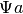 to 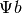, and is the point expressed in .
- arboris.homogeneousmatrix.rotx(angle)¶
Homogeneous matrix of a rotation around the x-axis.
Parameters: angle (float) – angle around x-axis in radian Returns: homogeneous matrix Return type: (4,4)-array Example:
>>> rotx(3.14/6) array([[ 1. , 0. , 0. , 0. ], [ 0. , 0.86615809, -0.4997701 , 0. ], [ 0. , 0.4997701 , 0.86615809, 0. ], [ 0. , 0. , 0. , 1. ]])
- arboris.homogeneousmatrix.roty(angle)¶
Homogeneous matrix of a rotation around the y-axis.
Parameters: angle (float) – angle around y-axis in radian Returns: homogeneous matrix Return type: (4,4)-array Example:
>>> roty(3.14/6) array([[ 0.86615809, 0. , 0.4997701 , 0. ], [ 0. , 1. , 0. , 0. ], [-0.4997701 , 0. , 0.86615809, 0. ], [ 0. , 0. , 0. , 1. ]])
- arboris.homogeneousmatrix.rotyx(angle_y, angle_x)¶
Homogeneous transformation matrix from roll-pitch angles.
Parameters: - angle_y (float) – pitch angle in radian
- angle_x (float) – roll angle in radian
Returns: homogeneous matrix of the roll-pitch orientation
Return type: (4,4)-array
In short, return: R = R_{y} * R_{x}
Example:
>>> rotyx(3.14/4, 3.14/3) array([[ 0.70738827, 0.61194086, 0.35373751, 0. ], [ 0. , 0.50045969, -0.86575984, 0. ], [-0.70682518, 0.61242835, 0.35401931, 0. ], [ 0. , 0. , 0. , 1. ]])
- arboris.homogeneousmatrix.rotz(angle)¶
Homogeneous matrix of a rotation around the z-axis.
Parameters: angle (float) – angle around z-axis in radian Returns: homogeneous matrix Return type: (4,4)-array Example:
>>> rotz(3.14/6) array([[ 0.86615809, -0.4997701 , 0. , 0. ], [ 0.4997701 , 0.86615809, 0. , 0. ], [ 0. , 0. , 1. , 0. ], [ 0. , 0. , 0. , 1. ]])
- arboris.homogeneousmatrix.rotzx(angle_z, angle_x)¶
Homogeneous transformation matrix from roll-yaw angles.
Parameters: - angle_z (float) – yaw angle in radian
- angle_x (float) – roll angle in radian
Returns: homogeneous matrix of the roll-yaw orientation
Return type: (4,4)-array
In short, return: R = R_{z} * R_{x}
Example:
>>> rotzx(3.14/6, 3.14/3) array([[ 0.86615809, -0.25011479, 0.43268088, 0. ], [ 0.4997701 , 0.43347721, -0.74988489, 0. ], [ 0. , 0.86575984, 0.50045969, 0. ], [ 0. , 0. , 0. , 1. ]])
- arboris.homogeneousmatrix.rotzy(angle_z, angle_y)¶
Homogeneous transformation matrix from pitch-yaw angles.
Parameters: - angle_z (float) – yaw angle in radian
- angle_y (float) – pitch angle in radian
Returns: homogeneous matrix of the pitch-yaw orientation
Return type: (4,4)-array
In short, return: R = R_{z} * R_{y}
Example:
>>> rotzy(3.14/6, 3.14/4) array([[ 0.61271008, -0.4997701 , 0.61222235, 0. ], [ 0.35353151, 0.86615809, 0.35325009, 0. ], [-0.70682518, 0. , 0.70738827, 0. ], [ 0. , 0. , 0. , 1. ]])
- arboris.homogeneousmatrix.rotzyx(angle_z, angle_y, angle_x)¶
Homogeneous transformation matrix from roll-pitch-yaw angles.
Parameters: - angle_z (float) – yaw angle in radian
- angle_y (float) – pitch angle in radian
- angle_x (float) – roll angle in radian
Returns: homogeneous matrix of the roll-pitch-yaw orientation
Return type: (4,4)-array
In short, return: R = R_{z} * R_{y} * R_{x}
Example:
>>> rotzyx(3.14/6, 3.14/4, 3.14/3) array([[ 0.61271008, 0.27992274, 0.73907349, 0. ], [ 0.35353151, 0.73930695, -0.57309746, 0. ], [-0.70682518, 0.61242835, 0.35401931, 0. ], [ 0. , 0. , 0. , 1. ]])
- arboris.homogeneousmatrix.rotzyx_angles(H)¶
Returns the roll-pitch-yaw angles corresponding to the rotation matrix of
 .
.Parameters: H ((4,4)-array) – homogeneous matrix Returns: angles of roll pitch yaw Return type: (3,)-array Returns the angles such that .
Example:
>>> angles = array((3.14/3, 3.14/6, 1)) >>> (rotzyx_angles(rotzyx(*angles)) == angles).all() True
- arboris.homogeneousmatrix.transl(t_x, t_y, t_z)¶
Homogeneous matrix of a translation.
Parameters: t_x, t_y, t_z (float) – coordinates of the translation vector in 3d space Returns: homogeneous matrix of the translation Return type: (4,4)-array Example:
>>> transl(1., 2., 3.) array([[ 1., 0., 0., 1.], [ 0., 1., 0., 2.], [ 0., 0., 1., 3.], [ 0., 0., 0., 1.]])
- arboris.homogeneousmatrix.vdot(H, vec)¶
Frame displacement for a vector.
Parameters: - H ((4,4)-array) – the homogeneous matrix to check
- vec ((3,)-array) – point one wants to displace
Returns: the displaced point
Return type: (3,)-array
, where 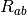 is the rotation matrix from to , and is the vector expressed in .
- arboris.homogeneousmatrix.zaligned(vec)¶
Returns an homogeneous matrix whose z-axis is colinear vith vec.
Parameters: vec ((3,)-array) – input vector, assumed to be normalized Returns: homogeneous matrix of the frame aligned with vec Return type: (4,4)-array Example:
>>> zaligned((1.,0.,0.)) array([[-0., 0., 1., 0.], [ 0., -1., 0., 0.], [ 1., 0., 0., 0.], [ 0., 0., 0., 1.]])
adjointmatrix¶
Functions for working with adjoint matrices.
considering an homogeneous matrix , the related adjoint matrix is defined as follows
- arboris.adjointmatrix.inv(Ad)¶
Invert an adjoint matrix.
- arboris.adjointmatrix.isadjointmatrix(Ad)¶
Return true if Ad is an adjoint matrix.
twistvector¶
Functions for working with twists stored as [w,v]
- arboris.twistvector.adjacency(tw)¶
Return the adjacency matrix.
Parameters: tw ((6,)-array) – a twist to build the adjacency matrix. Return type: (6,6)-array Example:
>>> t = array([1., 2., 3., 10., 11., 12.]) >>> adjacency(t) array([[ 0., -3., 2., 0., 0., 0.], [ 3., 0., -1., 0., 0., 0.], [ -2., 1., 0., 0., 0., 0.], [ 0., -12., 11., 0., -3., 2.], [ 12., 0., -10., 3., 0., -1.], [-11., 10., 0., -2., 1., 0.]])
- arboris.twistvector.exp(tw)¶
Return the exponential of the twist matrix.
Parameters: tw ((6,)-array) – a twist to build the adjacency matrix. Returns: a homogeneous matrix corresponding to the displacement generated by the twist in 1 second. Return type: (4,4)-array Example:
>>> t = array([1., 2., 3., 10., 11., 12.]) >>> exp(t) array([[ -0.69492056, 0.71352099, 0.08929286, 2.90756949], [ -0.19200697, -0.30378504, 0.93319235, 11.86705709], [ 0.69297817, 0.6313497 , 0.34810748, 13.78610544], [ 0. , 0. , 0. , 1. ]])
massmatrix¶
Functions for working with mass matrices.
- arboris.massmatrix.box(half_extents, mass)¶
Mass matrix of an homogeneous parallelepiped.
Parameters: - half_extents ((3,)-array) – the half dimension (in m) of the box along x, y, z
- mass (float) – the box mass in kg
Example:
>>> box((2., 4., 6.), 3.) array([[ 52., 0., 0., 0., 0., 0.], [ 0., 40., 0., 0., 0., 0.], [ 0., 0., 20., 0., 0., 0.], [ 0., 0., 0., 3., 0., 0.], [ 0., 0., 0., 0., 3., 0.], [ 0., 0., 0., 0., 0., 3.]])
- arboris.massmatrix.cylinder(length, radius, mass)¶
Mass matrix of a homogeneous cylinder, with symmetry along z-axis.
Parameters: - length (float) – the cylinder length in m along z-axis
- radius (float) – the cylinder radius in m
- mass (float) – the cylinder mass in kg
Example:
>>> cylinder(1., 0.1, 12.) array([[ 1.03, 0. , 0. , 0. , 0. , 0. ], [ 0. , 1.03, 0. , 0. , 0. , 0. ], [ 0. , 0. , 0.06, 0. , 0. , 0. ], [ 0. , 0. , 0. , 12. , 0. , 0. ], [ 0. , 0. , 0. , 0. , 12. , 0. ], [ 0. , 0. , 0. , 0. , 0. , 12. ]])
- arboris.massmatrix.ellipsoid(radii, mass)¶
Mass matrix of an homogeneous ellipsoid.
Parameters: - radii ((3,)-array) – the principal radii (in m) of the ellipsoid along x, y, z
- mass (float) – the ellipsoid mass in kg
Example:
>>> ellipsoid((3.,1.,2.), 5.) array([[ 5., 0., 0., 0., 0., 0.], [ 0., 13., 0., 0., 0., 0.], [ 0., 0., 10., 0., 0., 0.], [ 0., 0., 0., 5., 0., 0.], [ 0., 0., 0., 0., 5., 0.], [ 0., 0., 0., 0., 0., 5.]])
- arboris.massmatrix.ismassmatrix(M, semi=False)¶
Check whether M is a valid mass matrix.
Parameters: - M ((6,6)-array) – the mass matrix to check
- semi (bool) – if set to True, positive semi-definite matrices are also considered valid.
Returns: True if M is correctly shaped and symmetric positive definite.
- arboris.massmatrix.principalframe(M)¶
Find the principal frame of inertia of a mass matrix.
Parameters: M ((6,6)-array) – mass matrix expressed in any frame (say  )
)Returns: the homogeneous matrix from to principal frame (say  )
)Return type: (4,4)-array Example:
>>> M_a = diag((3.,2.,4.,1.,1.,1.)) >>> H_ab = Hg.transl(1., 3., 0.) >>> M_b = transport(M_a, H_ab) >>> H_ba = principalframe(M_b) >>> dot(H_ab, H_ba) array([[ 1., 0., 0., 0.], [ 0., 1., 0., 0.], [ 0., 0., 1., 0.], [ 0., 0., 0., 1.]])
- arboris.massmatrix.sphere(radius, mass)¶
Mass matrix of an homogeneous sphere.
Parameters: - radius (float) – the sphere radius in m
- mass (float) – the sphere mass in kg
Example:
>>> sphere(1., 5.) array([[ 2., 0., 0., 0., 0., 0.], [ 0., 2., 0., 0., 0., 0.], [ 0., 0., 2., 0., 0., 0.], [ 0., 0., 0., 5., 0., 0.], [ 0., 0., 0., 0., 5., 0.], [ 0., 0., 0., 0., 0., 5.]])
- arboris.massmatrix.transport(M, H)¶
Transport (express) the mass matrix into another frame.
Parameters: - M ((6,6)-array) – the mass matrix expressed in the original frame (say, )
- H ((4,4)-array) – homogeneous matrix from the new frame (say ) to the
original one:

Returns: the mass matrix expressed in the new frame (say, )
Return type: (6,6)-array
Example:
>>> M_a = diag((3., 2., 4., 1., 1., 1.)) >>> H_ab = Hg.transl(1., 3., 0.) >>> M_b = transport(M_a, H_ab) >>> allclose(M_b, [[ 12., -3., 0., 0., 0., -3.], ... [ -3., 3., 0., 0., 0., 1.], ... [ 0., 0., 14., 3., -1., 0.], ... [ 0., 0., 3., 1., 0., 0.], ... [ 0., 0., -1., 0., 1., 0.], ... [ -3., 1., 0., 0., 0., 1.]]) True >>> ismassmatrix(M_b) True >>> from math import pi >>> H_ab = Hg.rotx(pi/4) >>> M_b = transport(M_a, H_ab) >>> allclose(M_b, [[ 3., 0., 0., 0., 0., 0.], ... [ 0., 3., 1., 0., 0., 0.], ... [ 0., 1., 3., 0., 0., 0.], ... [ 0., 0., 0., 1., 0., 0.], ... [ 0., 0., 0., 0., 1., 0.], ... [ 0., 0., 0., 0., 0., 1.]]) True >>> ismassmatrix(M_b) True
- M ((6,6)-array) – the mass matrix expressed in the original frame (say,